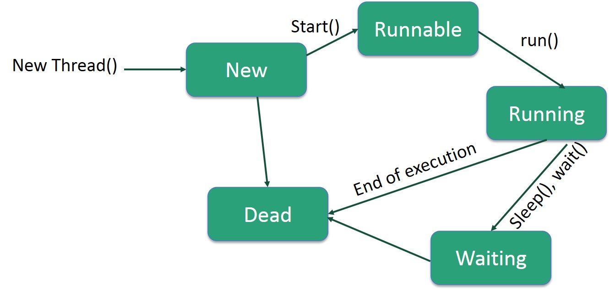

final :Final Class cannot be subclassedFinal methods cannot be overriddenFinal variables can occur at most once as a left-hand expression on an executed command- All methods in a final class are implicitly
final
finally Finally block in java can be used to put "cleanup" code such as closing a file, closing connection etc.- Java
finally block is always executed whether exception is handled or not. - This is used to close non-memory resources like file handles, sockets, database connections
static static members belong to the class instead of a specific instance.
-
default : Visible to the package. No modifiers are needed.- A variable or method declared without any access control modifier is available to any other class in the same package.
private : Visible to the class only- Methods, variables, and constructors that are declared
private can only be accessed within the declared class itself. Private access modifier is the most restrictive access level. Class and interfaces cannot be private.
- Methods, variables, and constructors that are declared
public : Visible to the world- A class, method, constructor, interface, etc. declared
public can be accessed from any other class.
- A class, method, constructor, interface, etc. declared
protected : Visible to the package and all subclasses- Variables, methods, and constructors, which are declared
protected in a superclass can be accessed only by the subclasses in other package or any class within the package of the protected members' class. - The protected access modifier cannot be applied to class and interfaces.
- Variables, methods, and constructors, which are declared

Wrapper classes are used to convert any data type into an object.
Autoboxing : Automatic conversion of primitive types to the object of their corresponding wrapper classes is known as autoboxing.Unboxing : Automatically converting an object of a wrapper class to its corresponding primitive type is known as unboxing.
Generics was added in Java 5 to provide compile-time type checking and removing risk of ClassCastException that was common while working with collection classes.
It provides compile time type-safety and ensures that you only insert correct Type in collection and avoids ClassCastException in runtime.
Example:
List list = new ArrayList();
list.add("1");
list.add("string");
String str = list.get(1);
System.out.println(str); // output: string
Generics for loop:
List strings = new ArrayList();
//... add String instances to the strings list...
for(String aString : strings){
System.out.println(aString);
}
Comparable Interface
Method:
It compares strings on the basis of
return: >: positive int / ==: 0 / <: negative int
Can used to sort:
- String objects
- Wrapper class objects
- User-defined class objects
Used to order the objects of user-defined class. It provides
Method:
When to use Comparable and Comparator
Comparable: when sorting based on natural order.
Comparator: when sorting based on special ordering.
- Not to care for all those objects which are no longer in use.
Garbage collector destroys these objects. - Garbage collector is best example of
Daemon thread as it is always running in background. - Main objective of Garbage Collector is to free
heap memory by destroying unreachable objects. - Eligibility for garbage collection:
Unreachable objects : An object is said to be unreachable iff it doesn't contain any reference to it.- Object created inside method
- Nullifying the reference variable
What could happen at
- Syntax Errors
- Typechecking errors
- Running out of memory
- Division by zero
- Trying to open a file that isn't there

- Source file(.java)
- run source file through
Java Compiler (javac) . It checks for error and syntax in the source file. It transforms source file intobytecode . The bytecode is platform independent, because it's targeted at Java Virtual Machine. - Compiler creates
classfile . This classfile is coded into bytecode. The classfile isportable and can be ran on any platform. Java Virtual Machine runs the classfile. It is a specification that providesrun-time environment in which java bytecode can be executed.Java Runtime Environment (JRE) refers to a runtime environment in which java bytecode can be executed. It implements the JVM (Java Virtual Machine) and provides all the class libraries and other support files that JVM uses at runtime.Java Development Kit (JDK) a software development environment used for developing Java applications and applets. It includes the Java Runtime Environment (JRE), an interpreter/loader (java), a compiler (javac), an archiver (jar), a documentation generator (javadoc) and other tools needed in Java development.
- JDK: provides the environment to Develop and execute(run ) the Java program. (Development tools, and JRE)
- JRE: provides environment to only run(not develop) the java program. JRE is only used by them who only wants to run the Java Programs i.e. end users of your system. Contains built in libraries, JVM, toolkits.
- JVM: contained in both JRE and JDK. JVM is responsible for executing the java program line by line. Also known as interpreter
The Java Class loader is a part of the Java Runtime Environment that dynamically loads Java classes into the Java Virtual Machine.
Exception is an event that disrupts the normal flow of the program. It is an object which is thrown at runtime.

Error vs Exception
How JVM handles exceptions
- If an exception has occurred, the method creates an Object known as
Exception Object and hands it off to the JVM. (throwing an Exception ) - The exception object contains
name anddescription of the exception, andcurrent state of the program where exception has occurred. - There might be the list of the methods that had been called to get to the method where exception was occurred. This ordered list of the methods is called
Call Stack . - The run-time system searches the call stack to find
Exception Handler. - If found: run-time system pass exception to the handler
- If not found: run-time system handover the Exception Object to
default exception handler .
Types of Exception
- Checked Exception
- All exceptions other than
Runtime Exceptions are known as Checked exceptions as the compiler checks them during compilation to see whether the programmer has handled them or not. e.g.IOException, SQLException etc.
- All exceptions other than
- Unchecked Exception
- Runtime Exceptions are also known as Unchecked Exceptions. e.g. ArithmeticException, NullPointerException, ArrayIndexOutOfBoundsException etc.
Throw vs Throws
- Throw
- The throw keyword in Java is used to explicitly throw an exception from a method or any block of code. We can throw either checked or unchecked exception.
- Throws
- throws keyword is required only for
checked exception and usage of throws keyword for unchecked exception is meaningless.
- throws keyword is required only for
Java.lang is a package which contains the classes like System, String, String Buffer etc., This package doesn't have to be explicitly imported as they are imported by default.
java.util is a package which contains classes like Date, Vector, Dictionary, hashtable etc., This has to be imported everytime you use it in your program
Stack: Stack memory is responsible for holding references to heap objects and for storing value types. Thread has its own stack. Only exist within the scope of the function, once return, they are destroyed.
Heap: referenced by stack. Objects are created on heap.
- Ways to achieve array copy:
Object.clone() : provided by Object classSystem.arraycopy() : provided by System classArrays.copyOf() Arrays.copyOfRange() : uses System.arraycopy() method itself
Serialization is a mechanism of converting the state of an object into a
Deserialization is the reverse process where the byte stream is used to recreate the actual Java object in memory.
- If you want a class object to be
serializable , all you need to do it implement the java.io.Serializable interface. - Serialization in java is implemented by ObjectInputStream and ObjectOutputStream.
Example of Serialize to a file and Deserialize from the same file.
import java.io.FileInputStream;
import java.io.FileOutputStream;
import java.io.IOException;
import java.io.ObjectInputStream;
import java.io.ObjectOutputStream;
public class SerializationUtil {
// deserialize to Object from given file
public static Object deserialize(String fileName) throws IOException, ClassNotFoundException {
FileInputStream fis = new FileInputStream(fileName);
ObjectInputStream ois = new ObjectInputStream(fis);
Object obj = ois.readObject();
ois.close();
return obj;
}
// serialize the given object and save it to file
public static void serialize(Object obj, String fileName) throws IOException {
FileOutputStream fos = new FileOutputStream(fileName);
ObjectOutputStream oos = new ObjectOutputStream(fos);
oos.writeObject(obj);
fos.close();
}
}
import java.io.IOException;
public class SerializationTest {
public static void main(String[] args) {
String fileName="employee.ser";
Employee emp = new Employee();
emp.setId(100);
emp.setName("Pankaj");
emp.setSalary(5000);
//serialize to file
try {
SerializationUtil.serialize(emp, fileName);
} catch (IOException e) {
e.printStackTrace();
return;
}
Employee empNew = null;
try {
empNew = (Employee) SerializationUtil.deserialize(fileName);
} catch (ClassNotFoundException | IOException e) {
e.printStackTrace();
}
}
}
- Serialization Methods
readObject(ObjectInputStream ois) : If this method is present in the class, ObjectInputStream readObject() method will use this method for reading the object from stream.writeObject(ObjectOutputStream oos) : If this method is present in the class, ObjectOutputStream writeObject() method will use this method for writing the object to stream.Object writeReplace() : If this method is present, then after serialization process this method is called and the object returned is serialized to the stream.Object readResolve() : If this method is present, then after deserialization process, this method is called to return the final object to the caller program.
- Serialization with Inheritance
Case 1 : If superclass is serializable then subclass is automatically serializable- If superclass is Serializable, then by default every subclass is serializable.
Case 2 : If a superclass is not serializable then subclass can still be serialized- Even though superclass doesn't implements Serializable interface, we can serialize subclass object if subclass itself implements Serializable interface.
Case 3 : If the superclass is serializable but we don't want the subclass to be serialized- One possible way by which a programmer can achieve this is by implementing the writeObject() and readObject() methods in the subclass and needs to throw NotSerializableException from these methods.
- If we don't want to save value of a particular variable in a file, then we use transient keyword. When JVM comes across transient keyword, it ignores original value of the variable and save default value of that variable data type.
- transient keyword plays an important role to meet security constraints. There are various real-life examples where we don't want to save private data in file.
Life Cycle of a Thread

New : A new thread begins its life cycle in the new state. It remains in this state until the program starts the thread.Runnable : After a newly born thread is started, the thread becomes runnable. A thread in this state is considered to be executing its task.Waiting : Sometimes, a thread transitions to the waiting state while the thread waits for another thread to perform a task. A thread transitions back to the runnable state only when another thread signals the waiting thread to continue executing.Timed Waiting : A runnable thread can enter the timed waiting state for a specified interval of time.Terminated : A runnable thread enters the terminated state when it completes its task or otherwise terminates.
- Thread creation by extending the Thread class
- Create a class that extends the java.lang.Thread class
- This class overrides the
run() method available in theThread class. - A thread begins its life inside
run() method. We create an object of our new class and callstart() method to start the execution of a thread. - Start() invokes the run() method on the Thread object.
// Java code for thread creation by extending the Thread class
class MultithreadingDemo extends Thread {
public void run() {
try {
// Displaying the thread that is running
System.out.println ("Thread " + Thread.currentThread().getId() + " is running");
}
catch (Exception e) {
// Throwing an exception
System.out.println ("Exception is caught");
}
}
}
// Main Class
public class Multithread {
public static void main(String[] args) {
int n = 8; // Number of threads
for (int i=0; i<8; i++) {
MultithreadingDemo object = new MultithreadingDemo();
object.start();
}
}
}
/* Output
Thread 8 is running
Thread 9 is running
Thread 10 is running
Thread 11 is running
Thread 12 is running
Thread 13 is running
Thread 14 is running
Thread 15 is running */
- Thread creation by implementing the Runnable Interface
- Create a new class which implements
java.lang.Runnable interface andoverride run() > method. - Then instantiate a
Thread object and callstart() method on this object.
// Java code for thread creation by implementing the Runnable Interface
class MultithreadingDemo implements Runnable {
public void run() {
try {
// Displaying the thread that is running
System.out.println ("Thread " + Thread.currentThread().getId() + " is running");
}
catch (Exception e) {
// Throwing an exception
System.out.println ("Exception is caught");
}
}
}
// Main Class
class Multithread {
public static void main(String[] args) {
int n = 8; // Number of threads
for (int i=0; i<8; i++) {
Thread object = new Thread(new MultithreadingDemo());
object.start();
}
}
}
- Thread Class vs Runnable Interface
- If we extend the
Thread class , our class cannot extend any other class because Java doesn't supportmultiple inheritance. But, if we implement theRunnable interface , our class can still extend other base classes. - We can achieve basic functionality of a thread by extending
Thread class because it provides some inbuilt methods like yield(), interrupt() etc. that are not available inRunnable interface .
- join()
- If t is a Thread object whose thread is currently executing, then t.join(); it causes the current thread to pause its execution until thread t completes its execution.
- overloaded join()
- public final void join()
- public final synchronized void join(long millis)
- public final synchronized void join(long millis, int nanos)
- join() example
public class MultiThreading implements Runnable{ public void run() { Thread info = Thread.currentThread(); System.out.println(info.getName()); } public static void main(String args[]) { Thread t1 = new Thread(new MultiThreading()); Thread t2 = new Thread(new MultiThreading()); // start t2 t2.start(); // use join() to let t1 wait until t2 terminated try { t2.join(); } catch(InterruptedException e) { e.printStackTrace(); } // start t1 t1.start(); } } /* Output: Thread-1 Thread-0 */
- Synchronized
- Why use: situation where multiple threads try to access the same resources
- Using synchronized blocks: All synchronized blocks synchronized on the same object can only have one thread executing inside them at a time.
// Only one thread can execute at a time.
// sync_object is a reference to an object
// whose lock associates with the monitor.
// The code is said to be synchronized on
// the monitor object
synchronized(sync_object) {
// Access shared variables and other
// shared resources
}
- Interthread Communication
- Why use: when threads need to exchange information
- Methods:
public void wait() : Causes the current thread to wait until another thread invokes the notify().public void notify() : Wakes up a single thread that is waiting on this object's monitor.public void notifyAll() : Wakes up all the threads that called wait( ) on the same object.- All three methods can be called only from within a
synchronized context
- Deadlock
- Deadlock describes a situation where two or more threads are blocked forever, waiting for each other.
- Deadlock occurs when multiple threads need the same locks but obtain them in different order.
- Avoid:
- Avoid Nested Locks
- Avoid Unnecessary Locks
- Using thread join
- Write code to result in
deadlock :public class Deadlock{ public void method1(){ synchronized(String.class){ System.out.println("acquired lock on String.class"); synchronized(Integer.class){ System.out.println("acquired lock on Integer.class"); } } } public void method2(){ synchronized(Integer.class){ System.out.println("acquired lock on Integer.class"); synchronized(String.class){ System.out.println("acquired lock on String.class"); } } } }- If
method1() andmethod2() both will be called by two or many threads , there is a good chance ofdeadlock because if thread 1 acquires lock onSting object while executing method1() and thread 2 acquires lock on Integer object while executing method2() both will be waiting for each other to release lock on Integer and String to proceed further which will never happen. - Fix:
public class Deadlock{ public void method1(){ synchronized(Integer.class){ System.out.println("acquired lock on Integer.class"); synchronized(String.class){ System.out.println("acquired lock on String.class"); } } } public void method2(){ synchronized(Integer.class){ System.out.println("acquired lock on Integer.class"); synchronized(String.class){ System.out.println("acquired lock on String.class"); } } } }
- If
Main difference between
Synchronized method vsSynchronized block :Synchronized block is more preferred way because it doesn't lock theObject ,synchronized methods lock the Object and if there are multiple synchronization blocks in the class, even though they are not related, it will stop them from execution and put them in wait state to get the lock on Object.Synchronized block generally reduce scope of lock.- In case of
synchronized method , lock is acquired by thread when it entermethod and released when it leaves method, either normally or by throwing Exception. - In case of
synchronized block , thread acquires lock when they entersynchronized block and release when they leave synchronized block. -
/** * Java class to demonstrate use of synchronization method and block in Java */ public class SycnronizationExample{ public synchronized void lockedByThis(){ System.out.println(" This synchronized method is locked by current" instance of object i.e. this"); } public static synchronized void lockedByClassLock(){ System.out.println("This static synchronized method is locked by class level lock of this class i.e. SychronizationExample.class"); } public void lockedBySynchronizedBlock(){ System.err.println("This line is executed without locking"); Object obj = String.class; //class level lock of Stirng class synchronized(obj){ System.out.println("synchronized block, locked by lock represented using obj variable"); } } }
- used to signal threads, a compiler that this particular variables value are going to be updated by
multiple threads inside Java application. - The volatile keyword can only be applied to a
variable , it can not be applied to class or method. using volatile keyword along with class and method is a compiler error. - The values of volatile variable will
never be cached and all writes and reads will be done to and from themain memory . - When to use:
- In some cases we may only desire the
visibility andnot atomicity . Use of synchronized in such situation is anoverkill and may cause scalability problems. - Volatile variables have the
visibility features of synchronized butnot the atomicity features. - Any variable which is shared between multiple threads should be made variable, in order to ensure that all thread must see the latest value of the volatile variable.
- In some cases we may only desire the
wait() : tells the calling thread to give up the monitor and go to sleep until some other thread enters the same monitor and callsnotify() .notify() : wakes up the first thread that calledwait() on the same object.notifyAll() : wakes up all the threads that called wait() on the same object.- Producer and Consumer problem:
- Producer:
import java.util.Queue; import java.util.Random; public class Producer implements Runnable{ private Queueq; private int max; public Producer(Queue q, int max) { this.q = q; this.max = max; } @Override public void run() { while (true) { // a infinite loop to create and add random numbers synchronized(q) { // synchronized block: no other thread should modify the queue when we are doing condition check. while (q.size() == max) { // IMPORTANT: it cannot assume that the state it was waiting for is still valid. // It may have been valid in the past, but the // state may have been changed after the notify() // method was called and before the consumer thread woke up. try { System.out.println("producer queue is full"); q.wait(); // wait until Consumer remove an item from queue } catch(Exception e) { e.printStackTrace(); } } Random r = new Random(); int i = r.nextInt(); q.add(i); System.out.println("added new item in Producer: " + i); q.notifyAll(); // notify all that new item added } } } } - Consumer:
import java.util.Queue; public class Consumer implements Runnable{ private Queueq; public Consumer(Queue q, int max) { this.q = q; } @Override public void run() { while (true) { synchronized(q) { while (q.isEmpty()) { System.out.println("queue is empty"); try { q.wait(); } catch(Exception e) { e.printStackTrace(); } } System.out.println("Consumed: " + q.remove()); q.notifyAll(); } } } } - main:
import java.util.LinkedList; import java.util.Queue; public class MultiThreading { public static void main(String args[]) { // IMPORTANT: should create one queue for both thread (shared object), otherwise it's not shared Queuequeue = new LinkedList (); Thread pThread = new Thread(new Producer(queue, 10)); Thread cThread = new Thread(new Consumer(queue, 10)); pThread.start(); cThread.start(); } }
- Producer:
- Difference between start() and run():
start method creates anew thread and call the code written inside the run method on a new thread whilecalling run method executes that code on thesame thread .
- Difference between wait() and sleep()
wait will release the lock and must be called from thesynchronized context , whilesleep will only pause the thread for some time andkeep the lock .wait() method should be used in conjunction withnotify() ornotifyAll() method and intended for communication between two threads in Java.Thread.sleep() method is a utility method to introduceshort pauses during program or thread execution.
- How do you detect
deadlock ?